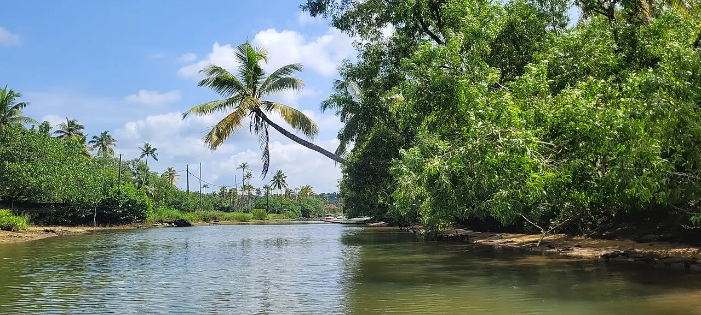
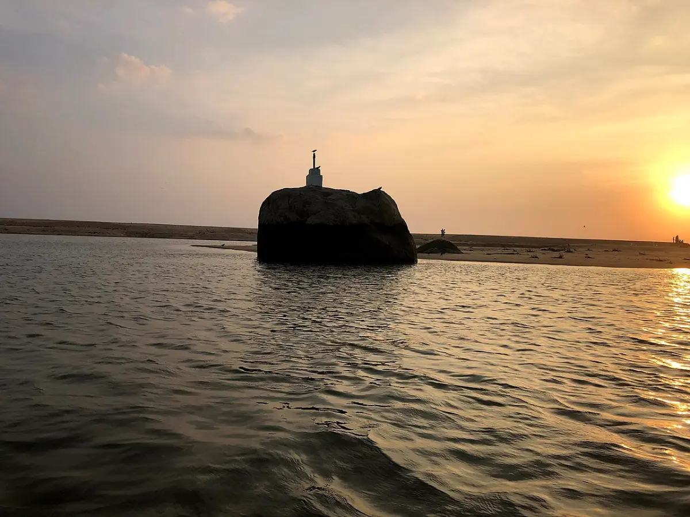
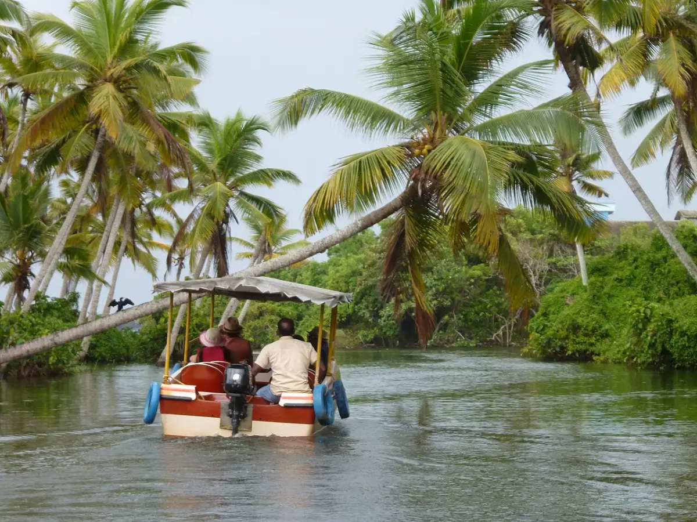
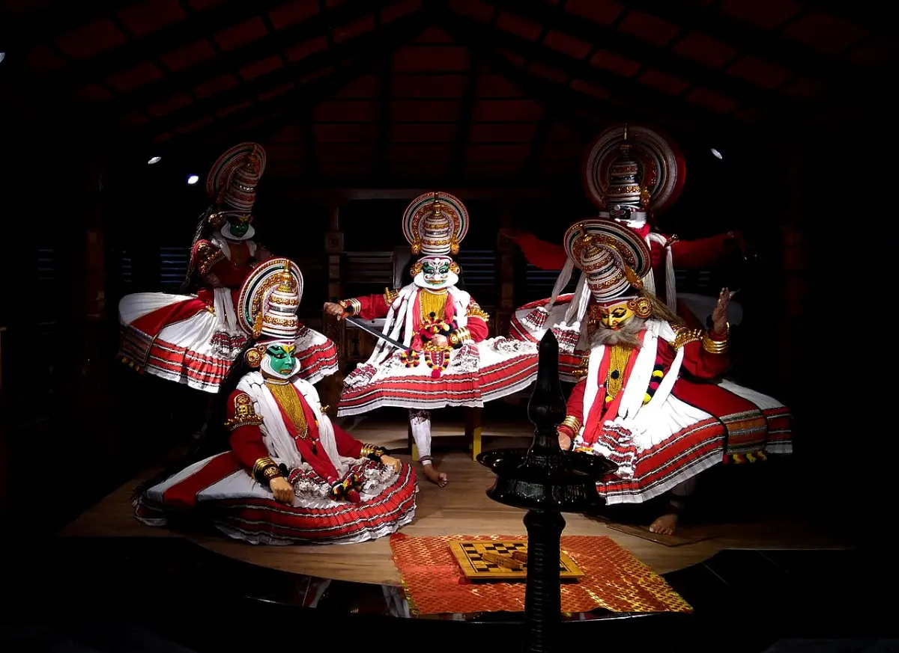
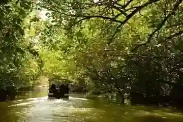
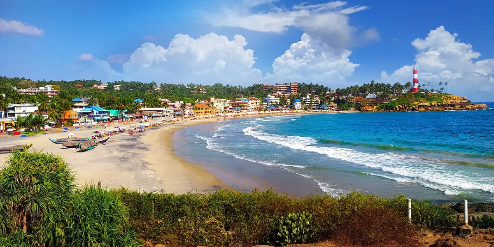
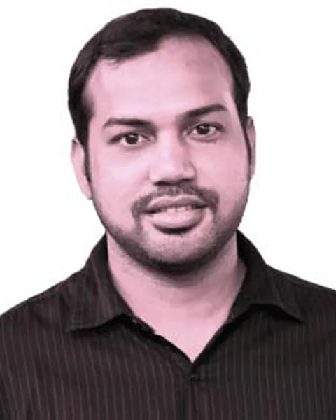

By air
Thiruvananthapuram International Airport
Approximately 30 km from the resort; about one hour by road.
Invitation-only international conference
Organised by Digital University Kerala

About CM4 2026
CM4 2026 brings together researchers who use computation to explain and predict the behaviour of molecules and materials. The programme examines bonding in small rings and clusters, how solvents and electric fields influence reaction mechanisms and selectivity, and how modelling can guide the design of catalysts, batteries, semiconductor materials and drug candidates.
The talks and posters draw on quantum chemistry, molecular simulation and machine learning. They explore how automated searches can identify plausible reaction pathways, how machine-learning force fields can extend the scale of atomistic simulations, and how predictions can be tested against experiment.
The meeting also includes a special lecture by Professor E. D. Jemmis and a session celebrating his contributions to theoretical chemistry.
Participants
69 participants
Participant portraits
Programme
Tentative programme
The programme is subject to change. Expand a session’s talk slots to see individual speaker timings.
All times are in Indian Standard Time (IST).



Poovar estuary: Maskaravivek, Wikimedia Commons, CC BY-SA 3.0. Backwater boat ride: Arindambasu2, Wikimedia Commons, CC BY-SA 4.0. Kathakali: Jijojoygd, Wikimedia Commons, CC BY-SA 4.0. Resized and converted to WebP.
Venue


Poovar · Kerala
Conference organisers will arrange pick-up and drop-off for participants from Thiruvananthapuram International Airport and Thiruvananthapuram Central railway station.
By air
Approximately 30 km from the resort; about one hour by road.
By train
Approximately 35 km from the resort.

Poovar coast: Midhun Subhash, Wikimedia Commons, CC0. Mangrove backwaters: Deepsikder, Wikimedia Commons, CC BY-SA 4.0; cropped and converted to WebP. Kovalam beach: Georgeumartin, Wikimedia Commons, CC BY-SA 4.0; resized and converted to WebP.
Committees
People behind CM4
Meet the organising and academic committees shaping the scientific programme and the conference.

Patron
Organising committee
6 members
Convenor · Digital University Kerala
IISER Thiruvananthapuram

Digital University Kerala

Digital University Kerala

Srinivasa Ramanujan Institute for Basic Sciences

University of Calicut
Academic committee
14 members





Full profiles, affiliations and photographs